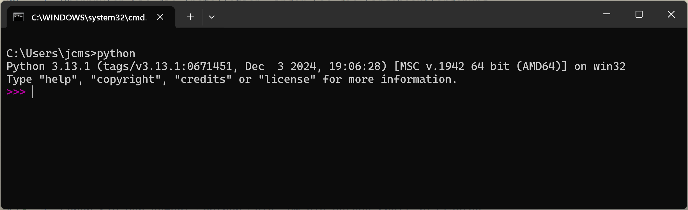
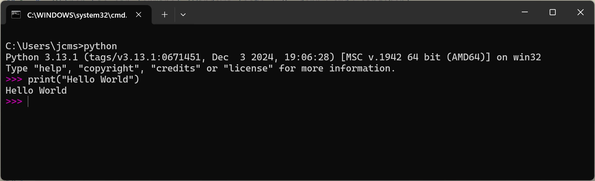
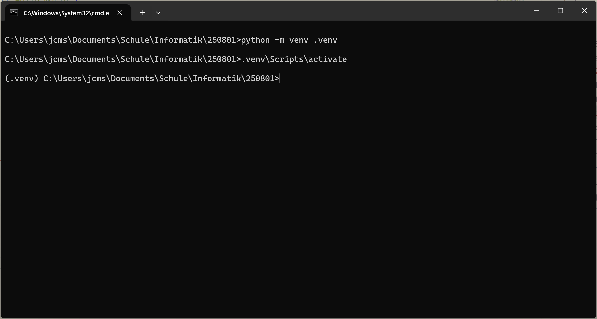
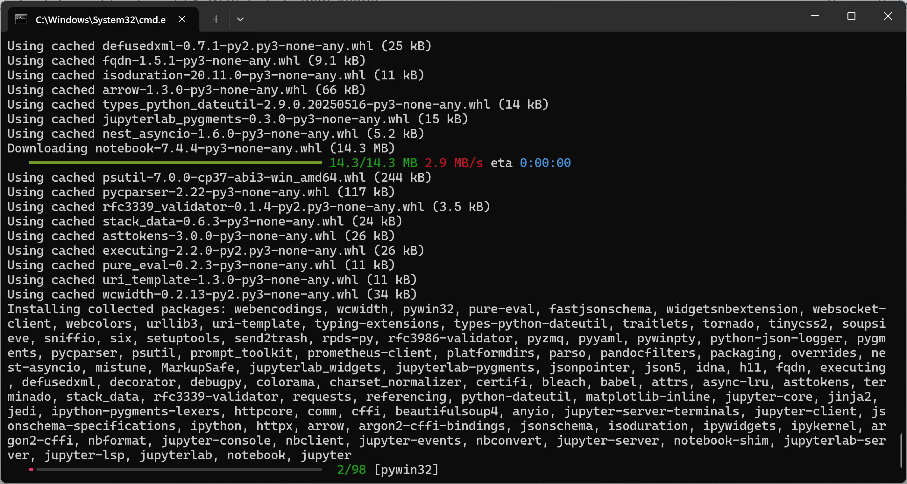
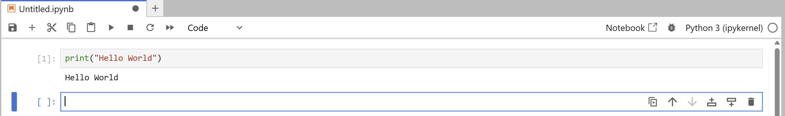
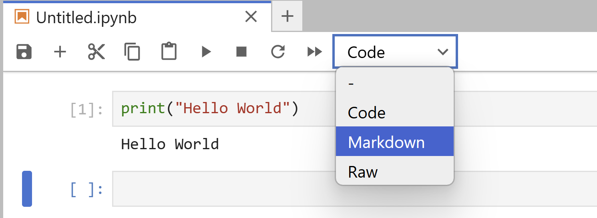

2 Arbeitsumgebung (Arbeiten mit Jupyter Notebooks)
2.1 Ausgangslage
In der Informatik geht es darum, wie Informationsverarbeitung mit Hilfe von Computern automatisiert werden kann.
Die Automatisierung der Informationsverarbeitung erfordert die Verwendung von Programmiersprachen. Im Informatikunterricht wird in erster Linie mit der Programmiersprache Python gearbeitet.
Im folgenden findet sich eine Anleitung für die Installation der für den Unterricht erforderlichen Programme.
2.2 Installation von Python
Dieser Abschnitt führt Sie Schritt für Schritt durch die Installation von Python auf einem Windows-Rechner.
Achten Sie beim Herunterladen von Python darauf, dass Sie sich auf der offiziellen Seite von Python (https://www.python.org) und nicht im Microsoft Store befinden. Wenn Sie versehentlich die Python Version aus dem Microsoft Store installiert haben, kann das bei der Arbeit an den Schulprojekten zu Problemen führen.
Deinstallieren Sie die Microsoft Version von Python und installieren Sie die Version von der offiziellen Website.
Laden Sie die neueste Version von Python von der offiziellen Website herunter: python.org.
Führen Sie das heruntergeladene Installationsprogramm durch Doppelklick auf die Datei aus. Stellen Sie sicher, dass Sie die Option “Add Python to PATH” aktivieren, bevor Sie auf “Install Now” klicken.
TippDie ‘PATH’-UmgebungsvariableStellen Sie sich die PATH-Variable wie ein Adressbuch für die Kommandozeile (Terminal) vor. Wenn Sie einen Befehl wie
pythoneingeben, schaut der Computer in diesem Adressbuch nach, wo das entsprechende Programm zu finden ist.Indem Sie das Häkchen bei “Add Python to PATH” setzen, fügen Sie die Adresse des Python-Interpreters zu diesem Adressbuch hinzu. Ohne diesen Eintrag weiss der Computer nicht, wo er suchen soll, und meldet, dass er den Befehl nicht kennt.
Überprüfen Sie die Installation, indem Sie die Eingabeaufforderung öffnen (Terminal \(\rightarrow\) Windows-Taste + R, dann
cmdeingeben) und den Befehlpython --versioneingeben. Dies sollte die installierte Python-Version anzeigen.
2.3 Hello World
Es hat sich eingebürgert, dass das erste Programm, das ausgeführt wird, ein Programm ist, das den Text “Hello World” auf dem Bildschirm ausgibt. Um dieser Tradition zu folgen, führen Sie die folgenden Schritte aus:
Öffnen Sie ein Terminal (Windows-Taste + R, dann
cmdeingeben).TippDas TerminalUnter dem Begriff “Terminal” versteht man ein Programm, das eine textbasierte Benutzeroberfläche bereitstellt, um mit dem Betriebssystem zu interagieren. In einem Terminal können Sie Befehle eingeben und erhalten die Ausgaben direkt im Fenster.
Geben Sie den Befehl
pythonein, um die Python-Shell zu starten. Die Python Shell sollte ungefähr so, wie das folgende Bild aussehen.
Python Shell Geben Sie den folgenden Befehl ein und drücken Sie anschliessend die Eingabetaste:
Das Resultat sollte wie das folgende Bild aussehen.

Python Shell
Gratuliere - Sie haben Ihr erstes Python-Programm erfolgreich ausgeführt!
2.4 Arbeitsumgebung
Im Unterricht wird nicht direkt in der Python-Shell gearbeitet, sondern mit sogenannten Jupyter Notebooks. Jupyter Notebooks ermöglichen es, in der gleichen Datei sowohl Code (Programm Teile) als auch formatierten Text (in Markdown) zu verarbeiten. Eine Jupyter Notebook Datei hat die Endung .ipynb. Vom Jupyter Notebook unterschieden werden muss die Arbeitsoberfläche in welcher die Jupyter Notebooks bearbeitet werden. Diese Oberfläche nennt sich JupyterLab und läuft in einem Webbrowser.
Die im Unterricht verwendeten Jupyter Notebooks sind Teil eines ganzen Jupyter Ökosystems. Der Name Jupyter setzt sich aus den drei Programmiersprachen Julia, Python und R zusammen, die in diesem Ökosystem eine zentrale Rolle spielen. Zum Jupyter Ökosystem gehören auch zahlreiche Erweiterungen und Tools, die die Arbeit mit Notebooks und Daten erleichtern.
Der Unterricht beschränkt sich auf die Verwendung von Jupyter Notebooks mit der Programmiersprache Python sowie den Einsatz von JupyterLab als Arbeitsumgebung.
Damit dies alles funktioniert, braucht es ein paar weitere Vorbereitungsarbeiten.
Erstellen Sie im Ordner “Informatik” einen Unterordner mit dem Heutigen Datum als Namen. Formatieren Sie das Datum nach dem Schema “YYMMDD”, für den 1. August 2025 wäre das zum Beispiel “250801”.
Öffnen Sie den soeben erstellten Ordner.
Geben Sie die Tastenfolge
Ctrl + Lein, um die Adresszeile des Dateimanagers zu aktivieren.Überschreiben Sie den Inhalt der Adresszeile mit dem Text
cmdund drücken Sie die Eingabetaste. Dadurch wird ein Terminal geöffnet, das direkt im aktuellen Ordner arbeitet.Geben Sie im neu geöffneten Terminal den folgenden Befehl ein und drücken Sie die Eingabetaste:
Dadurch wird eine sogenannte Python Virtual Environment erstellt (venv wegen Virtual Environment). Dieses Python Virtual Environment dient dazu, die eigenen Programmierprojekte unabhängig voneinander gestalten zu können.
Aktivieren Sie das Python Virtual Environment mit dem folgenden Befehl:
Ihr Terminal sieht nach dem Erstellen und Aktivieren der Python Virtual Environment ungefähr so aus:

Aktivierte Python Virtual Environment Das Wort in der Klammer am Anfang der Zeile zeigt den Namen der aktiven Python Virtual Environment an. Im vorliegenden Fall ist das .venv.
In der nun aktivierten Python Virtual Environment installieren Sie die benötigten Pakete mit dem folgenden Befehl:
Das dauert eine Weile.
Während der Installation werden die benötigten Pakete (Ergänzungen zur bestehenden Python Installation) heruntergeladen und in der Python Virtual Environment gespeichert. Das Terminal sieht dabei ungefähr so aus:

Terminal während der Jupyter Installation Alle in einer Python Virtual Environment installierten Pakete sind innerhalb dieser Umgebung dauerhaft verfügbar und müssen daher für das gleiche Projekt kein zweites Mal installiert werden.
Starten Sie den Jupyter Server mit dem folgenden Befehl:
Dies startet den Jupyter Notebook Server und öffnet automatisch ein Browserfenster mit der Jupyter Notebook Oberfläche.

Startseite Jupyter Lab Klicken Sie auf den Button “Python 3 (ipykernel)” unter dem Titel Notebook.
Damit starten Sie ein neues Jupyter Notebook. Der Cursor blinkt in einer leeren Zelle. Bei dieser Zelle handelt es sich um eine sogenannte Code-Zelle. In einer Code-Zelle können Sie Python Code eingeben und ausführen.
Überprüfen Sie das, indem Sie in der Zelle den Befehlprint("Hello World")eingeben und anschliessend die TastenfolgeShift + Enterdrücken (alternativ können Sie auch auf den Button “Run” in der Werkzeugleiste klicken).Das Resultat sollte wie das folgende Bild aussehen.

Hello World in einem Jupyter Notebook In einem Jupyter Notebook können Sie nicht nur Python Code ausführen, sondern auch Text (formatiert in Markdown) darstellen.
Für die Darstellung von Text müssen Sie die Zelle als Text-Zelle markieren. Dazu klicken Sie auf den Button “Code” in der Werkzeugleiste und wählen im Dropdown-Menü die Option “Markdown” aus.
Umstellen der Zelle auf Markdown Probieren Sie das aus. Schreiben Sie einen Titel und einen kurzen Text in die Zelle unterhalb der Code-Zelle mit
pringt("Hello World"). Damit der Text in der Zelle formatiert angezeigt wird, müssen Sie die Zelle mit der TastenfolgeShift + Enterausführen (analog zum Ausführen von Code-Zellen).Eine Zelle ist entweder eine Code-Zelle oder eine Text-Zelle. Für den Wechsel zwischen Code- und Text-Darstellung müssen Sie je eine neue Zelle anlegen. Das geht mit der Tastenfolge
Esc + B(für “Below”) oderEsc + A(für “Above”) während Sie sich in einer Zelle befinden. Alternativ können Sie auch die Buttons “Insert Cell Below” oder “Insert Cell Above” aus den Werkzeugen der Zelle verwenden.Das Jupyter Notebook ist eine Datei mit der Endung
.ipynb. Neu erstellte Jupyter Notebooks erhalten den Namen “Untitled.ipynb”. Um diesen Namen zu ändern, klicken Sie mit der rechten Maustatste auf den Titel “Untitled” in der oberen linken Ecke des Jupyter Notebooks und wählen Sie die Option “Rename” aus dem Kontextmenü. Anschliessend können Sie den Namen des Jupyter Notebooks eingeben.
2.5 Öffnen bestehender Jupyter Notebooks
Häufiger als das Erstellen eines neuen Jupyter Notebooks ist das Öffnen eines bereits bestehenden Jupyter Notebooks. Hier wird das entsprechende Vorgehen beschrieben.
Navigieren Sie in den Ordner in dem sich das Jupyter Notebook befindet.
Stellen Sie sicher, dass der Ordner über eine Python Virtual Environment mit installierten Jupyter Paketen verfügt.
Öffnen Sie dazu im ausgewählten Ordner das Terminal (
ctrl + Lanschliessendcmdund Eingabetaste). Dann starten Sie die Python Virtual Environment und geben den Befehlpip listein. Dieser Listet alle in der Python Virtual Environment installierten Pakete auf. Falls die Jupyter Pakete nicht aufgelistet werden, müssen Sie diese wie oben beschrieben installieren.Starten Sie den Jupyter Server mit dem Befehl
jupyter-lab.Öffnen Sie das Dateiverzeichnis. Dazu müssen Sie auf dem linken Rand das Ordner-Symbol anklicken.
Wählen Sie das Jupyter Notebook aus, das Sie öffnen möchten. Mit einem Doppelklick auf das Jupyter Notebook wird dieses geöffnet.
Wenn Sie das Dateiverzeichnis wieder schliessen möchten, klicken Sie auf das Ordner-Symbol auf der linken Seite erneut.
Diese Schritte funktionieren auch, wenn Sie ein Jupyter Notebook öffnen möchten, das Sie von jemand anderem erhalten haben. Sie müssen dieses dazu lediglich in den Ordner kopieren, in dem sich die Python Virtual Environment mit den installierten Jupyter Paketen befindet.
2.6 Häufige Fehlermeldungen
| Problem / Fehlermeldung (Was Sie sehen) | Mögliche Ursache (Warum es passiert) | Lösung (Was Sie tun können) |
|---|---|---|
Der Befehl python ist entweder falsch geschrieben oder konnte nicht gefunden werden. |
Python wurde bei der Installation nicht zur PATH-Variable hinzugefügt. Der Computer weiss nicht, wo er python.exe finden soll. |
|
Der Befehl jupyter-lab ist entweder falsch geschrieben oder konnte nicht gefunden werden. |
Sie haben vergessen, die virtuelle Umgebung zu aktivieren. Der Befehl jupyter-lab existiert nur innerhalb der aktivierten Umgebung. |
|
ImportError: DLL load failed... oder ähnliche Fehler unter Windows |
Ein häufiges Problem mit der Installation von pywin32, einer wichtigen Windows-Bibliothek, die von Jupyter benötigt wird. |
|
| Kernel Error oder der Status "Kernel starting, please wait..." ändert sich nicht | Die Verbindung zwischen der Browser-Oberfläche und dem Python-"Gehirn" (dem Kernel) ist gestört. Dies kann viele Ursachen haben. |
|
Permission denied (Zugriff verweigert) bei der Installation von Paketen |
Sie versuchen, Pakete an einem systemweiten Ort zu installieren (z. B. in C:\Program Files), für den Sie keine Schreibrechte haben. |
Dies ist genau das Problem, das virtuelle Umgebungen lösen! Stellen Sie sicher, dass Ihre venv aktiv ist ((.venv) muss sichtbar sein). Dadurch wird sichergestellt, dass alle Pakete lokal in Ihren Projektordner installiert werden, wo Sie die vollen Rechte haben. |